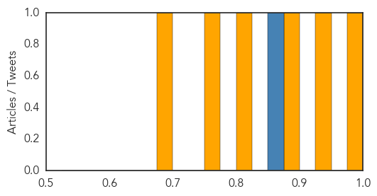

Dengue Fever
30-Day Web Trend
0 alerts, 0 warnings

30-Day Twitter Trend
0 alerts, 0 warnings

Article Locations

Article Confidences
Top Articles:
Top Tweets:
- 0.871
- After Pam there is a significant risk that diarrheal disease dengue fever flu measles will spread due to flooding poor sanitary cond
Hemmorhagic Fever
30-Day Web Trend
0 alerts, 0 warnings

30-Day Twitter Trend
0 alerts, 0 warnings

Article Locations

Article Confidences

Top Articles:
-
No articles found for Mar 17, 2015
Top Tweets:
-
No tweets found for Mar 17, 2015